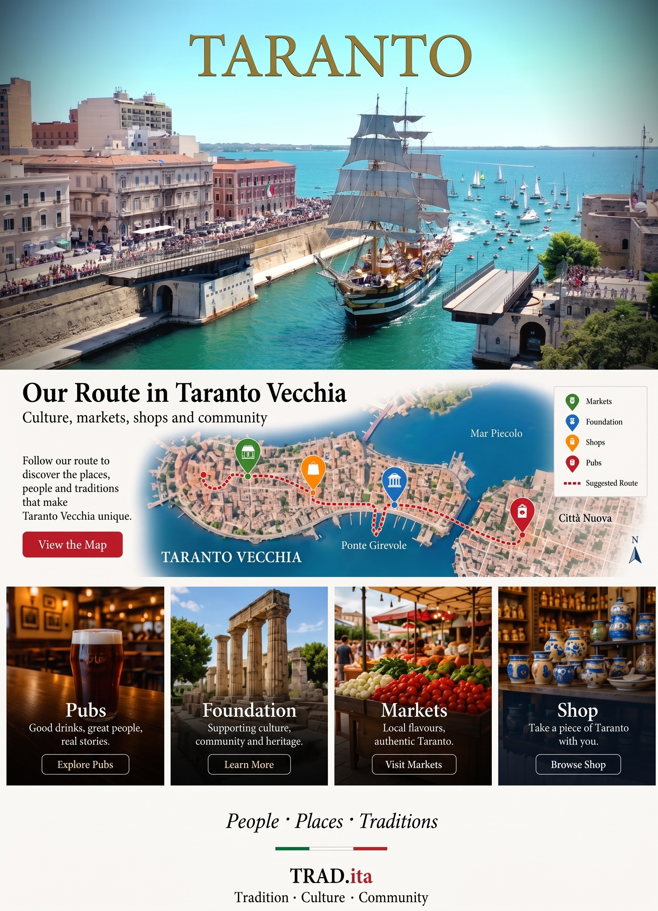
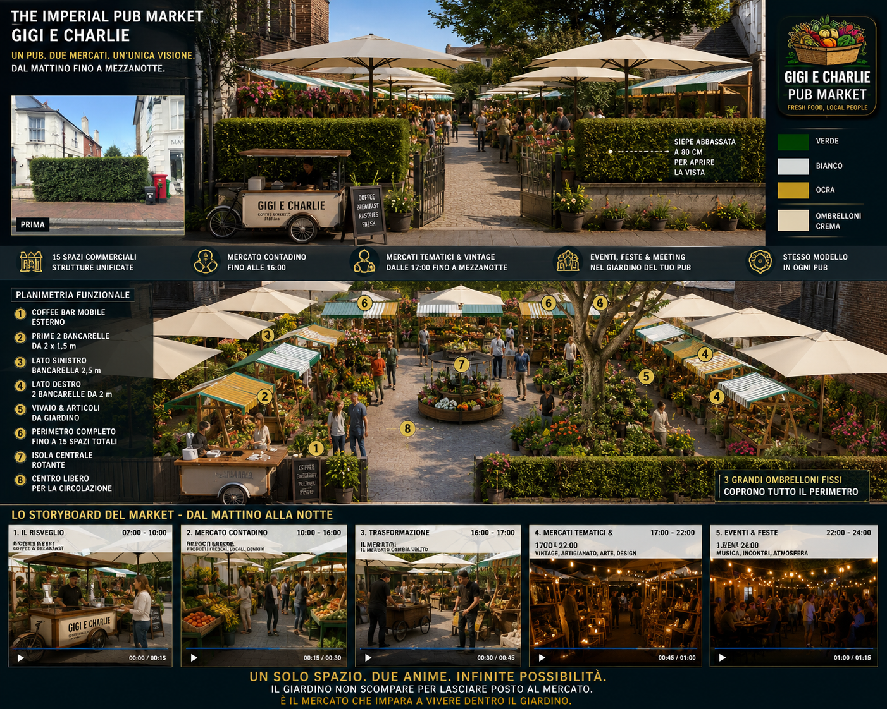
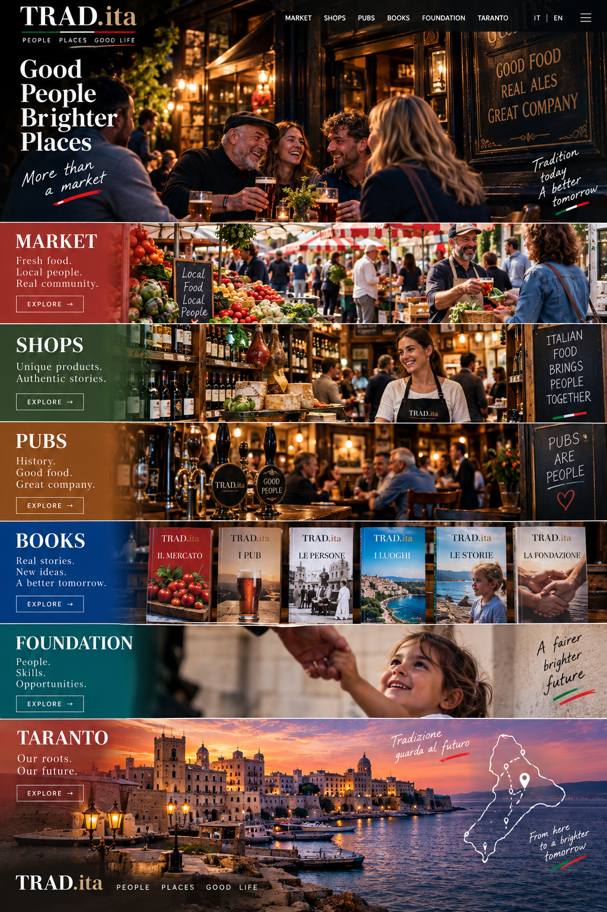
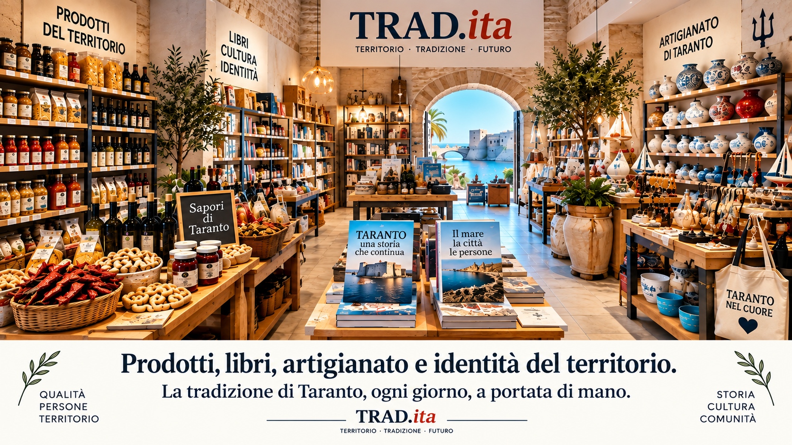
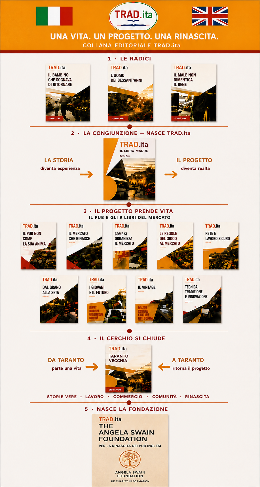
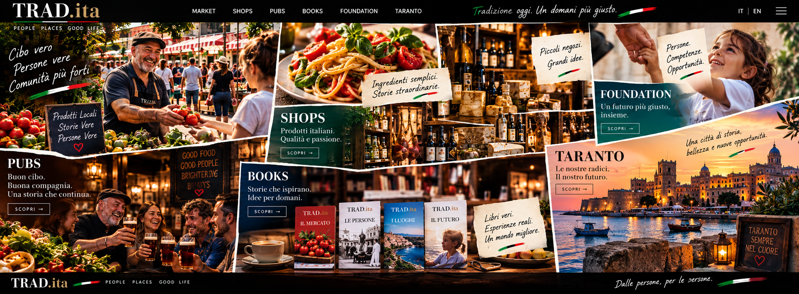
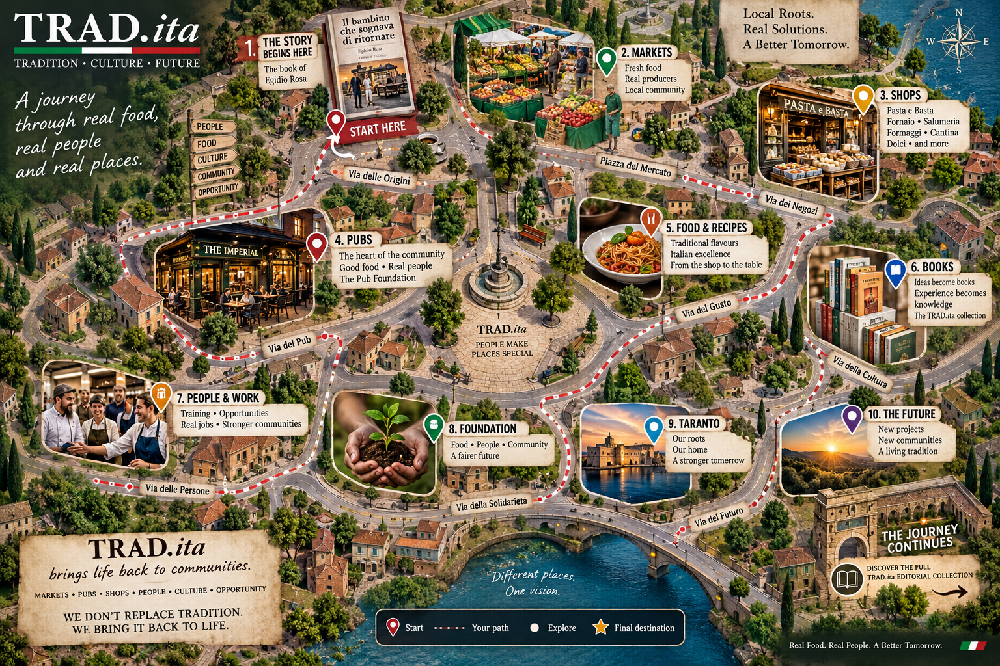

Food, markets, pubs, independent shops, books and community — brought together in one living
project.

TRAD.ita connects the identity of traditional places with new reasons for people to meet, shop,
eat, learn and return. We bring together local producers, independent traders, makers, traditional pubs,
specialist food formats, books and community projects — without taking away the character that makes each
place unique.
We don’t replace tradition. We bring it back to life.
PUBS
The pub doesn’t change its soul.
A pub is more than a building. It is part of the identity of a village, a neighbourhood and a
community.

Traditional pubs can become active community destinations throughout more of the day without
losing what makes them pubs. TRAD.ita combines the existing pub with carefully organised market activity,
local food, independent producers, makers and community experiences.
Protect the identity. Add new reasons to return.
MARKETS
Local life, from morning to evening.
Fresh food and producers by day; makers, vintage, culture and community life in the evening.

The market is not an event added on top of a place. It becomes part of its daily rhythm: food,
producers, traders, makers and people meeting in one organised space.
Day and evening. One place, two complementary lives.
SHOPS
Food that is sold, prepared, explained and experienced.
Specialist shop formats built around clear products, simple service and strong identity.

Products, books, craftsmanship and the identity of the territory. The shop is a place to buy,
discover and meet — keeping quality, people and local character visible.
La tradizione di Taranto, ogni giorno, a portata di mano.
BOOKS
The ideas behind the project, in print.
Stories, experience, practical ideas and the vision of TRAD.ita gathered into one editorial
collection.

The books record the ideas behind the project and turn experience into something that can be
shared, discussed and developed.
Una vita diventa racconto. Un racconto diventa progetto.
FOUNDATION
A foundation for community renewal.
Status: Foundation in formation.

The foundation is being developed to support people, places and communities around the wider
TRAD.ita vision: community heritage, renewal of traditional social places, pathways to work and
participation, inclusion and practical opportunity.
Community, opportunity and heritage.
FOOD TRUCKS
Italian food everywhere.
Click on the poster to see our options.
Tradition on wheels — a taste of Italy, anywhere.
×
OUR STORY
Tradition can create the future.
TRAD.ita grew from years of practical experience in food, retail, hospitality, markets and
community life in Italy and the United Kingdom.

The objective is not nostalgia. It is to use what already has meaning and give it a practical
future. Respect the place. Keep things practical. Create opportunity. Build community. Grow carefully.
One project. Many years of experience.
TARANTO
Everything begins from the roots.
Taranto, its old city, its sea, its markets and its community are part of the journey and its
The route brings together places, people, shops, markets, pubs, books and community.
Tutto parte da Taranto e tutto ritorna a Taranto.
CONTACT
Talk to TRAD.ita
Interested in a pub, market, specialist shop, producer opportunity, book, foundation project or
collaboration? Contact TRAD.ita and choose the subject that best describes your enquiry.